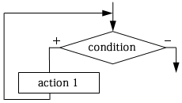
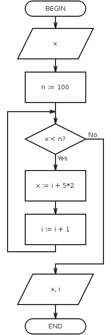

Loop is control structure, that organizes multiple execution of the action.
WHILE loop:

Execution of WHILE loop starts with testing condition, that’s why people called this kind of loop as loop with pre-condition. If condition is true, then action is executing, otherwise exit from loop is happens. We can say that condition for WHILE loop is condition for entering into loop. Action may be not executed even once in the particular case. You should write condition of loop so, that executing actions inside loop will break truth condition, otherwise there will be hang.
Hang is the endless repetition of executing actions.
An example of loop with pre-condition (picture from the program):
